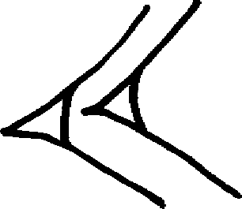
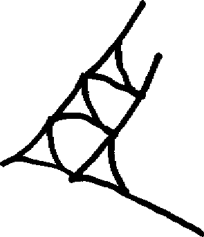
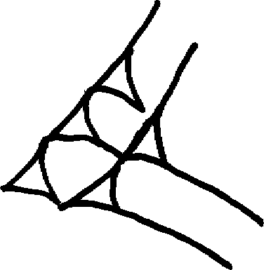
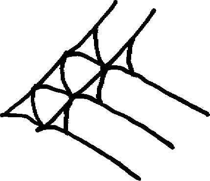
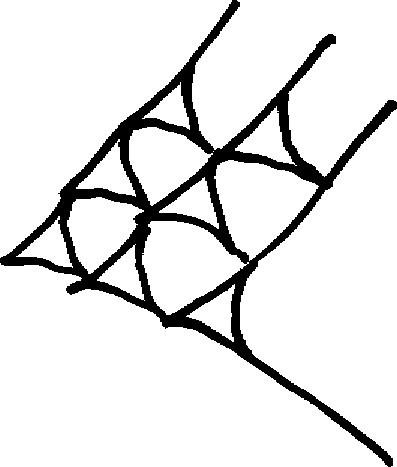
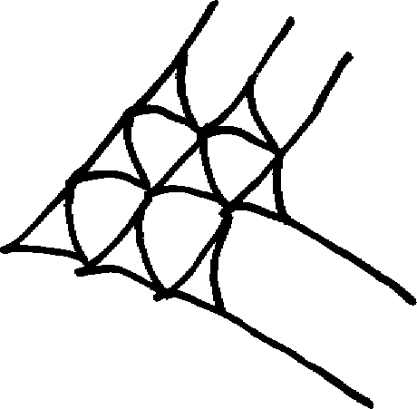
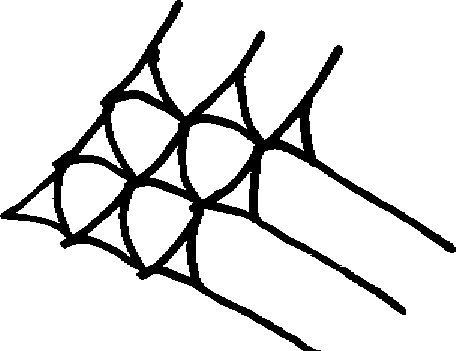

Mathematical notations use some conventions which are specific to mathematical and astronomical texts, as well as employing a variant of the standard CDLI method of notating sexagesimal numbers. They are described here.
In May 2008 conversations between Jacob Dahl, Peter Damerow, Manfred Krebernik, Christine Proust and Steve Tinney in Berlin and Eleanor Robson and Steve Tinney in Cambridge clarified a number of issues in the ATF support for the transliteration of mathematical and astronomical texts. This document was written by Steve Tinney to take into account the issues raised and resolved in those conversations.
To inform the ATF processor that you are using these conventions, include the following protocol at the start of your transliteration:
#atf: use math
The standard CDLI notation for numbers is, e.g., 1(u)
1(disz). Because the use of this notation becomes cumbersome
in the long sequences of number graphemes which occur in mathematical
texts, we recognize a set of graphemes which refer specifically to
equivalents in the CDLI disz-system. We call these disz-less
numbers.
Disz-less 1 to 9 are written without a leading zero in initial and independent positions, following standard practice in the transliteration of mathematical and astronomical texts. In medial and final position, they may be written with a leading zero to facilitate alignment of numbers in columnar texts.
We distinguish between standard (the most common) and variant stacking patterns for the purposes of transliteration. The standard and variant stacking patterns for 1 to 9 are as follows:
| Transliteration | CDLI | Unicode | Cuneiform |
|---|---|---|---|
| 1 | 1(disz) | U+12079 | 𒁹 |
| 2 | 2(disz) | U+1222B | 𒈫 |
| 3 | 3(disz) | U+12408 | 𒐈 |
| 4 | 4(disz) | U+1243C | 𒐼 |
| 5 | 5(disz) | U+1240A | 𒐊 |
| 6 | 6(disz) | U+1240B | 𒐋 |
| 7 | 7(disz) | U+12442 | 𒑂 |
| 8 | 8(disz) | U+12444 | 𒑄 |
| 9 | 9(disz) | U+12446 | 𒑆 |
| Transliteration | CDLI | Unicode | Cuneiform |
|---|---|---|---|
| 4@v | 4(disz)@v | U+12409 | 𒐉 |
| 7@v | 7(disz)@v | U+1240C | 𒐌 |
| 8@v | 8(disz)@v | U+1240D | 𒐍 |
| 9@v | 9(disz)@v | U+12448 | 𒑈 |
Tens from 10 to 90 are attested; several of the stacking patterns need to be added to Unicode.
| Transliteration | CDLI | Unicode | Cuneiform |
|---|---|---|---|
| 10 | 1(u) | U+1230B | 𒌋 |
| 20 | 2(u) |  | |
| 30 | 3(u) | U+1230D | 𒌍 |
| 40 | 4(u) |  | |
| 50 | 5(u) |  | |
| 60 | 6(u) |  | |
| 70 | 7(u) |  | |
| 80 | 8(u) |  | |
| 90 | 9(u) |  |
Combinations of tens and digits may similarly be transliterated in
math mode as 11.22.33.44.55 etc. This eliminates
possible ambiguities in the expression of numbers in place-value
notation. If a tens and digits grapheme is followed by
@v, this indicates that the digits part is written with
the variant form: 37@v = 3(u)+7(disz)@v.
Precomposed tens and digits numbers are not defined in Unicode but should be treated as compound signs.
The number zero is handled in cuneiform sources in several ways. One method is simply to give no indication of it, relying on context for disambiguation. A second is to use a deliberate blank space where zero is to be understood. The third is to use a cuneiform sign which we may then read as zero.
In general, the signs for zero are transliterated as 0
(in initial position; independent 0 is not known), or as
0 or 00 in medial and final position.
The different signs used for 00 are indicated using
the variant sign notation with tilde and a lowercase letter; the table
below gives the correlations between sign-forms and notations. By
definition, unadorned 00 is identical
to 00~a, which is by far the commonest way of indicating
zero.
The blank space left to indicate zero is always to be
transliterated as oo, i.e., a pair of lowercase latin
letter o characters.
The very rare cases where zero is required by the context but is
unmarked should be transliterated as <oo>, i.e., the
zero-space is supplied by the editor.
| Transliteration | Unicode | Cuneiform | Notes |
|---|---|---|---|
| 00 00~a |
U+12471 | 𒑱 | Identical to the punctuation mark 'colon'. |
| 00~b | Identical to "20", i.e., the MAN sign | ||
| 00~c | U+1240B | 𒐋 | This is "6" used as zero, attested in Seleucid astronomical texts; see Neugebauer ACT p.511 |
| 00~d | U+1230D | 𒌍 | This is "30" used as zero, attested in Seleucid astronomical texts; see Neugebauer ACT p.511 |
| oo | For spaces left to indicate medial zero see, e.g., P254790 = Plimpton 322 | ||
| <oo> | P357330 = AfO 50, 356 BM 106444 (1913-04-16, 1276) r 9 |
Most numbers are written with more than one grapheme; the components of these 'number words' are joined by dots:
𒈫 𒌍 = 2.30 𒁹 𒌋 𒐋 = 1.10.06 𒑈 𒑱 𒌍𒐈 = 9@v.00.33
A rare scribal convention is to use a colon to clarify that two
adjacent graphemes are separate even though the graphemes are part of
the same number word as in, e.g., P363174 = ACT 130 r iii 6. The
colon functions as an explicit marker that the tens column is empty
in such cases, and the requisite conventional transliteration
of the sequence is: 10.:6, i.e., the
leading zero in the number is replaced by a colon. Number
processing software should treat such colons as no-ops,
not as zeroes.
Steve Tinney & Eleanor Robson
Steve Tinney & Eleanor Robson, 'Mathematical Notations in Oracc corpora', Oracc Documentation, Oracc, 2013 [http://oracc.museum.upenn.edu/doc/editinginatf/maths/]